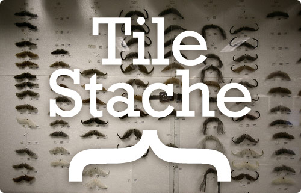

Open Source GIS
Trender
Christopher Fredén
Slides finns på http://icetan.github.io/oss-gis-trends
Open Source vs Closed Source
- Closed source: Drivkraft att skapa stora system
- Open source: Drivkraft att skapa lösningar för specifika problem
Professionell GIS
(tung-GIS, desktop-GIS)
- ESRI
- Mapinfo
- QGIS
Konsument-GIS
(web-GIS, neo-GIS)
Vi tillhandahåller GIS i den moderna browsern
- Lika kraftfullt som desktop-GIS
- typ...
- WebGL, Web Workers, Web Sockets, Web RTC
Vad använder Kartena?
|  | ||
 | ||
 |
Trend
Professionell GIS närmar sig konsument-GIS
- ESRI börjar öppna upp (delvis)
- QGIS web
Trend
Konsument-GIS närmar sig professionell GIS
JavaScript
Node.js / NPM
Komponenter
- Mindre funktionalitet per del, fler delar
- JavaScript minskar friktionen vid utvecklingen
- NPM hjälper till att hantera alla komponenter
- Detta är inget nytt, det är en gammal UNIX-idé
Exempel
Proj4Leaflet
Stöd för projektioner i Leaflet av Kartena
Andra plugin vi skrivit
- Leaflet Tilejson - lagerkonfiguration
- Leaflet Zoomslider - zoomslider
- Leaflet Pan control - panoreringskontroll
- Leaflet Editable handlers - ritverktyg
Open Source All the Things!
hur vi jobbar med open source
- Tänk open source från början
- Integration är viktigt
- Håll det enkelt
- Fler, mindre komponenter
- Mycket är användbart även om det inte är perfekt
Demo
geojson.io
GIS Nerd Tools
OpenStreetMap
d3js - Data Driven Documents
> npm install -g wellknown reproject geojsonio-cli
> echo "POINT(6399451 319802)" | wellknown |
reproject --reverse --sr --from epsg:3006 --to epsg:4326 |
geojsonio
Inspiration
http://chelm.github.io/foss4g2013-geo-javascript/Tack!
Christopher Fredén